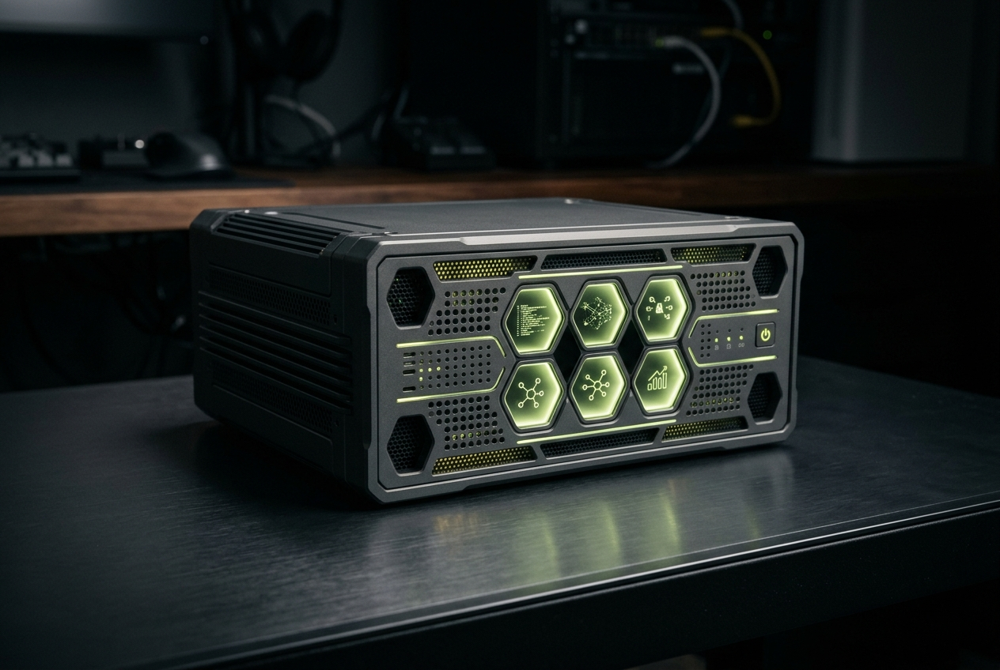
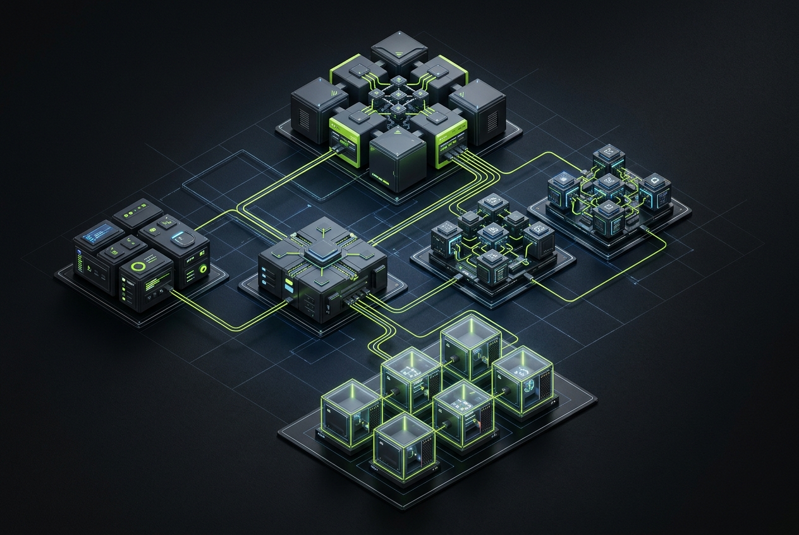

Brev launch
Generate a cloud launch command. No account connection is made here.
Run OpenShell, NemoClaw and OpenClaw in separately isolated sandboxes with explicit files, tools and network permissions. On suitable local GPU systems, Nestbox is planned to run a local Nemotron model in a dedicated model sandbox.

Planned v1: start, stop, inspect and govern supported local Nemotron models in dedicated sandboxes.
OPEN SOURCE · APACHE-2.0 · SELF HOSTED
Nestbox is a planned control plane for turning an Ubuntu host into a secure, understandable environment for AI work. Every agent receives an isolated sandbox, an explicit project mount and only the network access it needs.

The local React Admin console runs in its own web container. A separate FastAPI container provides the versioned control API. The gateway, OpenShell runtime and every agent sandbox remain separate containers, so responsibilities and trust boundaries stay clear.

Gateway container enforces routes and policy. OpenShell is the controlled execution entry point. Each agent receives an isolated sandbox container with its own project mount.
Planned web GUI for sandboxes, mounts, policy and MCP tools. Supports OpenCode, OpenChamber, Claude Code, Hermes, OpenAI-compatible agents, VS Code workflows and your own agent.

API keys are not baked into images or exposed as general sandbox files. A policy decision governs each permitted request through the gateway; mounts and outbound access are explicit, reviewable capabilities.
01 CONFIGURE
Mount only the project data a sandbox needs. Apply network policy before an agent receives a route.
Choose the machine identity, network, and compute profile. The generator reflects these values immediately.
02 GENERATE
The bundle is rendered in your browser. Copy its Ubuntu command or download a portable seed archive.
Configure a machine to render its seed bundle.

Planned: bootable ISO, local setup, cloud VM and workstation deployment. Network settings, DNS, NTP, trusted CA and proxy can be preconfigured. API keys are added only after first boot.
03 DEPLOY
Generate a cloud launch command. No account connection is made here.
Prepare an ISO request; image hosting remains under your control.

Planned Nestbox Center: React Admin web console, FastAPI control API, and separate policy, deployment, image-build and sandbox service containers.
COMPATIBILITY
Use OpenCode, OpenChamber, Claude Code, Hermes, OpenAI-compatible agents, or your own runtime. Each gets an independently governed nest.
Planned GUI: choose a sandbox template, tools, MCP capabilities, mounts and policy, then deploy an isolated runtime.
Examples: development with Git and GitHub; research with approved MCP tools; custom with your own agent.
04 OPERATE
Try the planned React Admin workflow before installation: choose a template, tools and policy, then inspect the resulting deployment plan.
Every action has an artifact: the recipe, generated cloud-init, install command, and deployment record.
Open the install guide · Read the documentation · View source